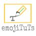

<div class="header">
       
        <div class="header-top-strip">
                <div style="flex-grow: 1;font-size: 2rem; display: flex; align-items: center">CLF-Dash</div>
                <div>
                    <mat-icon mat-button [matMenuTriggerFor]="menu">menu</mat-icon>

                    <mat-menu #menu="matMenu">
                    <button mat-menu-item [routerLink]="['/admins']" routerLinkActive="router-link-active" >Admins</button>
                    <button mat-menu-item [routerLink]="['/payments']" routerLinkActive="router-link-active" >Payments</button>
                    <button mat-menu-item [routerLink]="['/account']" routerLinkActive="router-link-active" >My Account</button>
                    </mat-menu>
                </div>

            
                

        </div>
        <div class="header-bottom-strip">
            <br/><br/>
                <mat-form-field>
                        <mat-label>Curriculumn</mat-label>
                        <mat-select [(ngModel)]="selected_curriculum">
                          <mat-option *ngFor="let item of curricula" (click)="onSelect()" [value]="item">
                            {{item.title}}
                          </mat-option>
                        </mat-select>
                </mat-form-field> 
        </div>
</div>

<div class="content">
        <router-outlet></router-outlet>
</div>


<div class="footer">
    <div class="menu-item" [routerLink]="['/home']" routerLinkActive="router-link-active" >
        <mat-icon>timeline</mat-icon>
        Dash
    </div>
    <div class="menu-item" [routerLink]="['/enrollment']" routerLinkActive="router-link-active" >
        <mat-icon>how_to_reg</mat-icon>
        Students
    </div>
    <div class="menu-item" [routerLink]="['/studio']" routerLinkActive="router-link-active" >
        <mat-icon>spellcheck</mat-icon>
        Library
    </div>

    <div class="menu-item" [routerLink]="['/careers']" routerLinkActive="router-link-active" >
        <mat-icon>emoji_people</mat-icon>
        Careers
    </div>

    <div class="menu-item" [routerLink]="['/training']" routerLinkActive="router-link-active" >
        <mat-icon>chat_bubble_outline</mat-icon>
        Training
    </div>
  
</div>